Strategic market reality partner
SIGNALOVERNOISE.
In a world full of information, what matters is not the volume but the ability to recognise relevant signals and put them into context.
T1T CORE combines TRUST, RELEVANCE and TRUE with NIKI · natural and artificial intelligence.
Contact by email info@t1tcore.com or via X · @T1TCORE
MANAGEMENT AND ADVISORY BOARD
STRATEGIC EXPERTISE. CLEAR RESPONSIBILITY.

T1T CORE is backed by entrepreneurial responsibility and strategic experience.
The combination of natural and artificial intelligence is complemented by human perspective and long standing experience.
Because market reality takes more than data and technology. It takes context, judgement and strategic understanding.
THE CHALLENGE
Information is everywhere. Clarity is what counts.
Markets change. Perceptions shift. Information grows faster than it can be put into context.
But which signals are truly relevant?
How is your company perceived? What significance does your brand have in the market? And which assumptions stand up to scrutiny?
Without solid answers to these questions, decisions rest on an incomplete foundation.
THE T1T CORE PERSPECTIVE
Market reality instead of assumption.
T1T CORE focuses on the actual market reality.
Combining a strategic perspective, natural and artificial intelligence and the three dimensions TRUST, RELEVANCE and TRUE creates a structured approach to relevant market questions.
Not more information for its own sake, but a better foundation for strategic orientation.
- More information does not mean more insight.
- Visibility is not automatically relevance.
- Perception is not necessarily reality.
THE THREE DIMENSIONS
TRUST. RELEVANCE. TRUE.
TRUST, RELEVANCE and TRUE are the three core dimensions through which T1T CORE looks at a market.
- TRUSTTrust and credibilityHow credible is your company perceived to be?
- RELEVANCEMarket relevance and significanceWhat significance does your company really have in the market?
- TRUEMarket reality and verificationWhat matches the verifiable facts, and what is merely assumption, interpretation or noise?
NIKI · NATURAL AND ARTIFICIAL INTELLIGENCE
Natural and artificial intelligence. Thought together.
NIKI stands for combining natural and artificial intelligence.
Technological capabilities are brought together with human experience and strategic judgement.
The result is an approach in which technology is not the focus. The focus is a better understanding of information and market developments.
AUDIT
The first step towards more market clarity.
The strategic T1T CORE audit is the central starting point for examining the market reality of your company.
It provides the framework to focus on the key questions around trust, market relevance and market reality.
The specific content, process and results of the audit are defined in the individual offer.
Technology creates possibilities. Strategic experience creates context. What counts is market reality.
SIGNAL OVER NOISE.